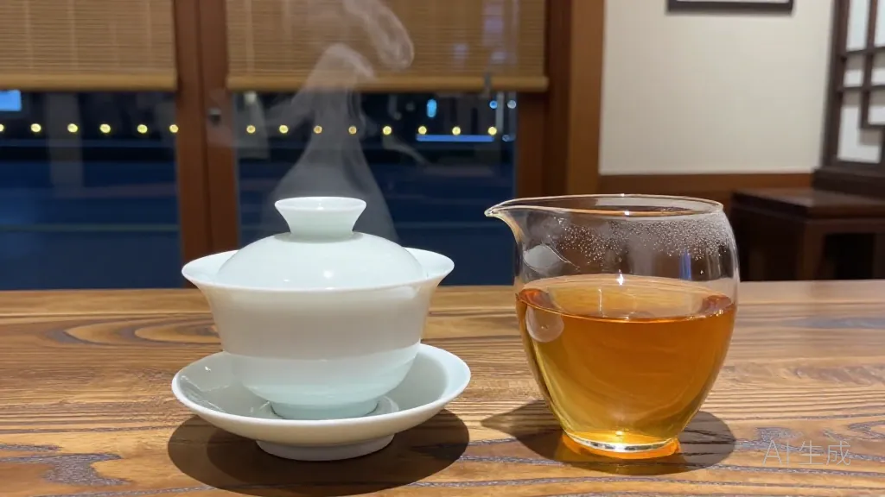
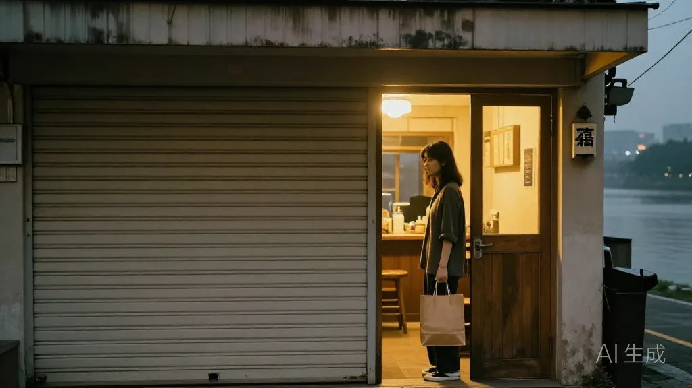
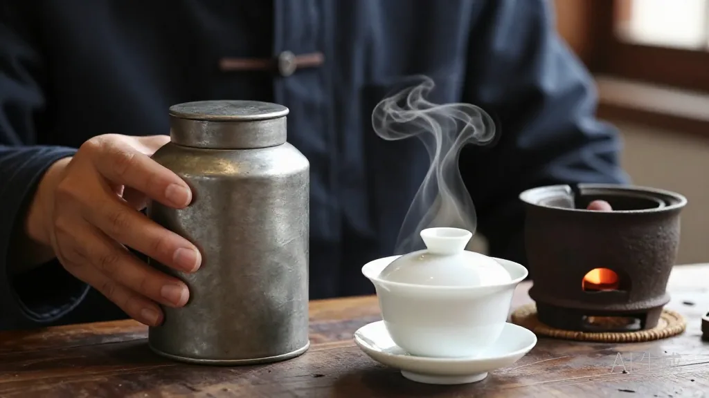
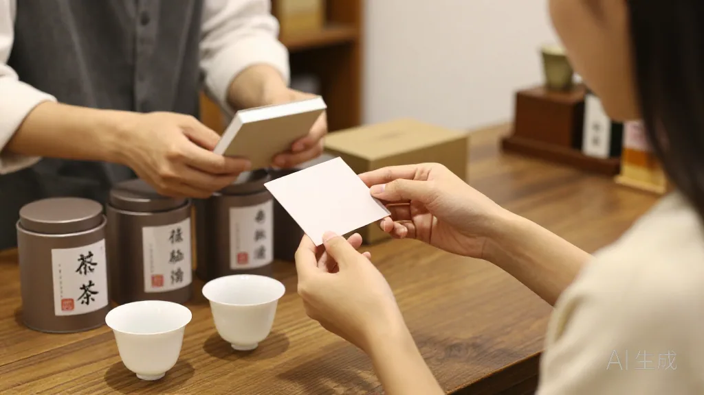
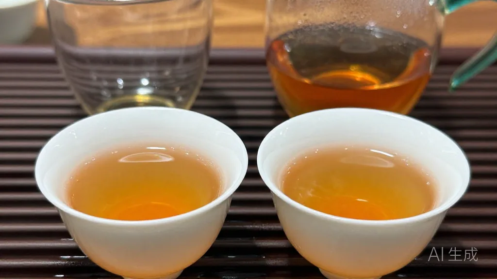

秋夜十一点四十，何小姐的礼盒被砍单，三百多张卡压在桌上。阿凤姐没先说话，先烫了盖碗——一泡八年老丛，把压货人的心事接住了。
🌿 开篇问答：深夜喝茶与压货，茶友最常问的几件事
Q1：深夜喝茶怕失眠，怎么喝？
阿凤姐一句话讲透：「夜里要喝老茶，不喝新茶。」新丛香气冲、咖啡碱活跃，喝了更精神；老丛或存放多年的老茶性子温和、甜水厚，夜里喝得住。少投茶、多泡几泡，喝淡一点，睡前两小时别喝浓的。
Q2：团购礼盒被砍单、货压手怎么办？
拆开零卖：①老丛配陈皮做秋冬围炉包（一包老丛三克搭陈皮两克，成本不到十块，团购价三十八，社区拼团就能跑）；②碎茶装茶包走奶茶店茶底（一斤能出五十来杯）；③印好的礼盒卡照样能用。压的是货，不是人。
Q3：惠州哪里能喝到正宗老丛凤凰单丛？
来 阿凤姐茶叶店（惠州凤凰茶业），地址：惠州市惠城区东湖花园一区沿江商铺89-136，每天 9:00-21:00 营业。电话：13435567385（微信同号，支持快递全国）。批发、零售、试饮、团购、礼盒定制都能谈。
【场景开头】
沿江的宵夜档收了最后一张折叠桌，阿凤姐正低头数今天出库的单子——秋茶旺季，一天要发七八个件——卷帘门只落了一半，一阵风卷着江上的湿气进来，门口站了个瘦瘦的人影。何小姐拎着个牛皮纸袋，眼底两团乌青，站在门口搓着手：「凤姐，还没关吧？我今天……不太想回家。」

【第一幕：桌上的心事】
何小姐去年才起步做团购，从阿凤姐这儿一手一手拿货，秋冬礼盒走得最好。她把袋子往桌上一放，三百多张刚印好的礼盒卡。「早上对接的那家公司说预算砍了，两百箱礼盒不要了。」她声音发闷，「卡印了，茶备了，钱还是跟我表哥借的。」阿凤姐没接话，先从柜子最里层捧出一只老锡罐。
【第二幕：一泡老丛的慢】
「先喝茶。」她把白瓷盖碗一个个烫透，「杯子凉了，香留不住。」小秤称九克八年老丛，小烤炉上文火烘五分钟，蜜香一点点醒过来，绕过茶桌飘到门口。100 度的水高冲进盖碗，第一泡洗茶倒掉，第二泡出汤，琥珀色透亮。「闻闻公道杯。」阿凤姐把茶分下去，「深夜得选老丛。新丛香气冲，喝了更精神；老茶性子温和，甜水厚，夜里喝得住。」何小姐捧着杯子喝了一口，肩膀一下塌下来，眼圈红了。

【第三幕：算给她听】
「我刚来惠州那年，骑着单车驮茶样跑茶楼，三十家敲门，二十九家让我走。」阿凤姐续水，「但我记住一句：货不会骗人，只会等人。」她拿过那叠礼盒卡翻了两下：「两百箱压手，咱就拆开走。卡上的茶不必整箱出——配成秋冬围炉包，一包老丛三克搭陈皮两克，成本不到十块，团购价三十八，社区拼团就能跑。碎茶也别扔，装茶包走奶茶店茶底，一斤还能出五十来杯。」她又从罐里抓了一把：「三十年老丛给你试销二十斤，卖完再结账。压的是货，不是人。」

【第四幕：第四泡才出甜】
「你看这茶。」阿凤姐把第三泡、第四泡分给她，「头两泡是客套，第四第五泡才是精华。生意也一样，熬过前几泡，后面全是甜的。」何小姐掏出手机记：围炉包、暖饮拼团、碎茶走茶包。记完忽然笑了：「凤姐，那我那两百张卡，还能用上。」

【尾声】
十二点四十，江上薄雾更浓。何小姐拎着二十斤老丛出门，回头喊了一句：「下个月卖完，我马上回来找你！」阿凤姐没关门口那盏暖灯。她心里琢磨着：今晚来的是何小姐，上夜班的代驾、跑长途回来的货车司机，深夜里推门进来，她这壶老丛，是不是也接得住？
📍 惠州买茶去哪？阿凤姐茶叶店欢迎你
🏪 店铺：阿凤姐茶叶店（惠州凤凰茶业）
📍 地址：惠州市惠城区东湖花园一区沿江商铺89-136
📱 电话：13435567385（微信同号，支持全国快递）
⏰ 营业时间：每天 9:00-21:00，全年无休
🚗 停车：东湖花园沿街有停车位，导航搜索「凤凰茶业」即可
🍵 店内主营：潮州凤凰单丛全系列（老丛、鸭屎香、蜜兰香、黄枝香、芝兰香等）、新会陈皮、围炉包与茶礼定制；批发、零售、试饮、团购均可。